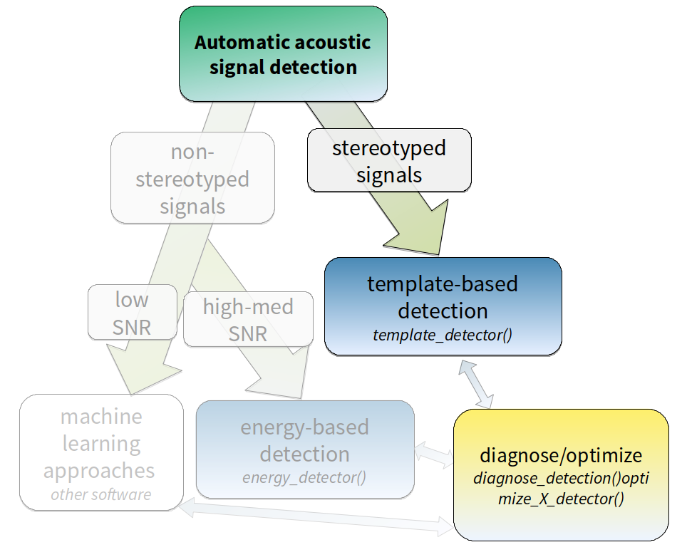
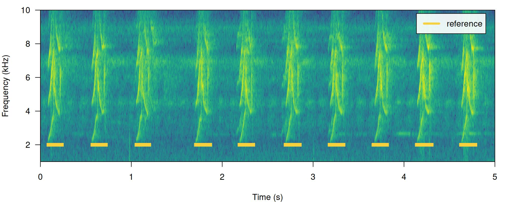
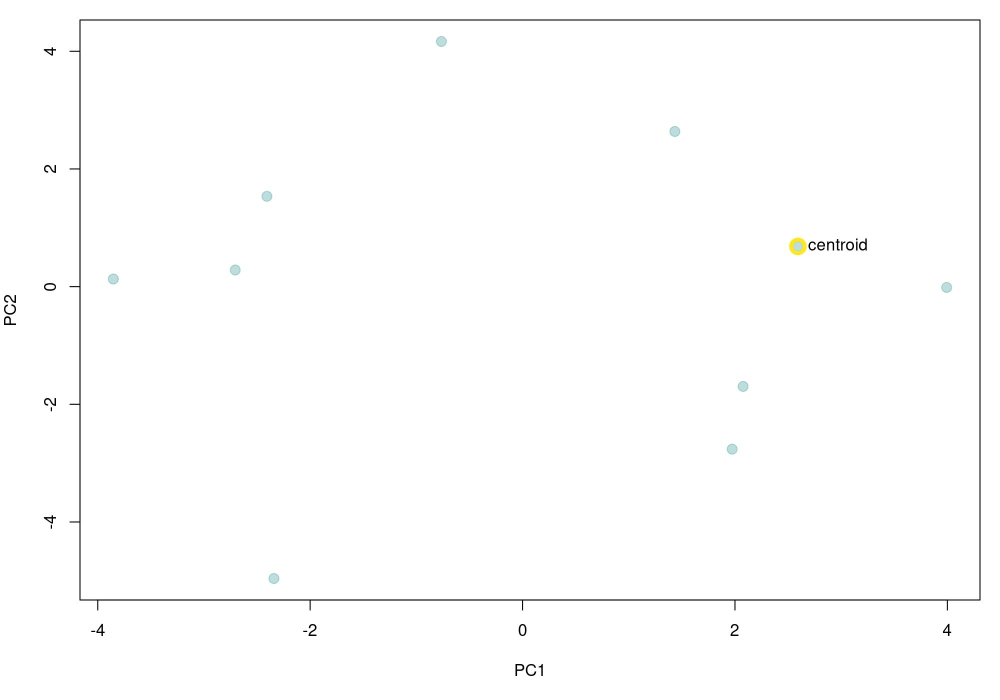
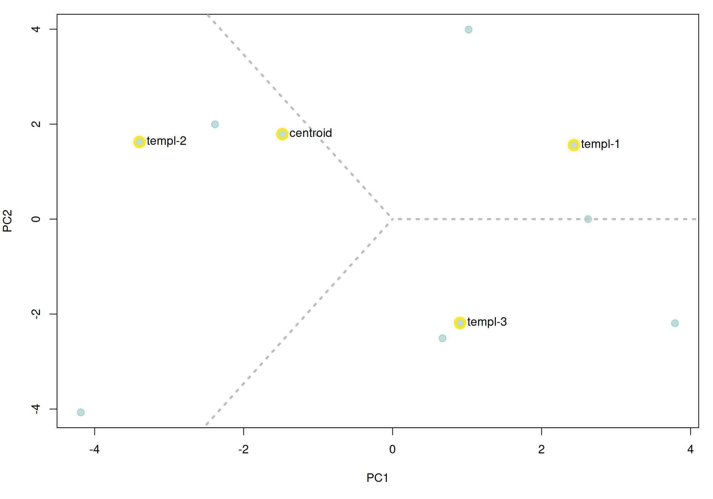
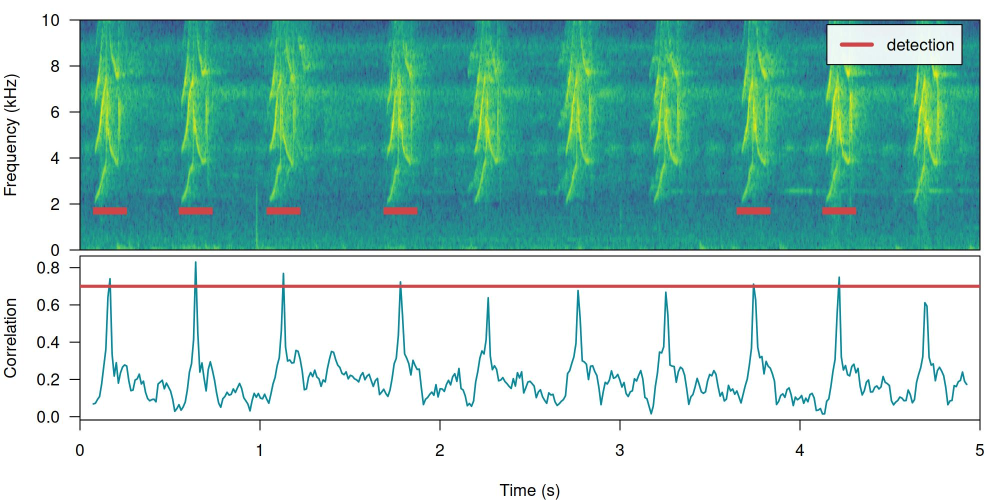

Template-based detection
Marcelo Araya-Salas, PhD
2026-10-13
Source:vignettes/template_based_detection.Rmd
template_based_detection.RmdThis vignette details the use of template-based detection in ohun. The template-based detection method is better suited for highly stereotyped sound events. As it is less affected by signal-to-noise ratio, it’s more robust to higher levels of background noise:

The procedure for template-based detection is divided into three steps:
- Choosing the right template (
get_templates()) - Estimating the cross-correlation scores of templates along sound
files (
template_correlator())
- Detecting sound events by applying a correlation threshold
(
template_detector())
First, we need to install the package. It can be installed from CRAN as follows:
# From CRAN would be
install.packages("ohun")
#load package
library(ohun)To install the latest developmental version from github you will need the R package remotes:
# install package
remotes::install_github("maRce10/ohun")
#load packages
library(ohun)
library(tuneR)
library(warbleR)The package comes with an example reference table containing annotations of long-billed hermit hummingbird songs from two sound files (also supplied as example data: ‘lbh1’ and ‘lbh2’), which will be used in this vignette. The example data can be loaded and explored as follows:
# load example data
data("lbh1", "lbh2", "lbh_reference")
# save sound files
tuneR::writeWave(lbh1, file.path(tempdir(), "lbh1.wav"))
tuneR::writeWave(lbh2, file.path(tempdir(), "lbh2.wav"))
# select a subset of the data
lbh1_reference <-
lbh_reference[lbh_reference$sound.files == "lbh1.wav",]
# print data
lbh1_reference
[30mObject of class
[1m'selection_table'
[22m
[39m
[90m* The output of the following call:
[39m
[90m
[3m`[.selection_table`(X = lbh_reference, i = lbh_reference$sound.files ==
[23m
[39m
[90m
[3m"lbh1.wav")
[23m
[39m
[90m
[1m
Contains:
[22m
* A selection table data frame with 10 rows and 6 columns:
[39m
[90m sound.files selec start end bottom.freq top.freq
[39m
[90m--- ------------ ------ ------- ------- ------------ ---------
[39m
[90m10 lbh1.wav 10 0.0881 0.2360 1.9824 8.4861
[39m
[90m11 lbh1.wav 11 0.5723 0.7202 2.0520 9.5295
[39m
[90m12 lbh1.wav 12 1.0564 1.1973 2.0868 8.4861
[39m
[90m13 lbh1.wav 13 1.7113 1.8680 1.9824 8.5905
[39m
[90m14 lbh1.wav 14 2.1902 2.3417 2.0520 8.5209
[39m
[90m15 lbh1.wav 15 2.6971 2.8538 1.9824 9.2513
[39m
[90m... and 4 more row(s)
[39m
[90m
* A data frame (check.results) with 10 rows generated by check_sels() (as an attribute)
[39m
[90mcreated by warbleR < 1.1.21
[39mWe can also plot the annotations on top of the spectrograms to further explore the data (this function only plots one wave object at a time, so it is not really useful for long files):
# print spectrogram
label_spectro(wave = lbh1, reference = lbh1_reference, hop.size = 10, ovlp = 50, flim = c(1, 10))
The function get_templates() can help you find a
template closest to the average acoustic structure of the sound events
in a reference table. This is done by finding the sound events closest
to the centroid of the acoustic space. When the acoustic space is not
supplied (‘acoustic.space’ argument) the function estimates it by
measuring several acoustic parameters using the function spectro_analysis()
from warbleR
and summarizing it with Principal Component Analysis (after
z-transforming parameters). If only 1 template is required the function
returns the sound event closest to the acoustic space centroid. The
rationale here is that a sound event closest to the average sound event
structure is more likely to share structural features with most sounds
across the acoustic space than a sound event in the periphery of the
space. These ‘mean structure’ templates can be obtained as follows:
# get mean structure template
template <-
get_templates(reference = lbh1_reference, path = tempdir())
[30mcomputing spectral features (step 0 of 0):
[39m
[90mThe first 2 principal components explained 0.52 of the variance
[39m
The graph above shows the overall acoustic space, in which the sound
closest to the space centroid is highlighted. The highlighted sound is
selected as the template and can be used to detect similar sound events.
The function get_templates() can also select several
templates. This can be helpful when working with sounds that are just
moderately stereotyped. This is done by dividing the acoustic space into
sub-spaces defined as equal-size slices of a circle centered at the
centroid of the acoustic space:
# get 3 templates
templates <- get_templates(reference = lbh1_reference,
n.sub.spaces = 3, path = tempdir())
[90mThe first 2 principal components explained 0.52 of the variance
[39m
We will use the single template object (‘template’) to run a detection on the example ‘lbh1’ data:
# get correlations
correlations <-
template_correlator(templates = template,
files = "lbh1.wav",
path = tempdir())The output is an object of class ‘template_correlations’, with its own printing method:
# print
correlations
[30mObject of class
[1m'template_correlations'
[22m
[39m
[90m* The output of the following
[3mtemplate_correlator()
[23m call:
[39m
[90m
[3mtemplate_correlator(templates = template, files = "lbh1.wav",
[23m
[39m
[90m
[3mpath = tempdir())
[23m
[39m
[90m* Contains 1 correlation score vector(s) from 1 template(s):
[3mlbh1.wav-10
[23m
[39m
[90m
... and 1 sound file(s):
[3mlbh1.wav
[23m
[39m
[90m
* Created by
[1mohun
[22m1.0.5
[39mThis object can then be used to detect sound events using
template_detector():
# run detection
detection <-
template_detector(template.correlations = correlations, threshold = 0.7)
detection
[30mObject of class
[1m'selection_table'
[22m
[39m
[90m* The output of the following call:
[39m
[90m
[3mtemplate_detector(template.correlations = correlations, threshold = 0.7)
[23m
[39m
[90m
[1m
Contains:
[22m
* A selection table data frame with 6 rows and 6 columns:
[39m
[90msound.files selec start end template scores
[39m
[90m------------ ------ ------- ------- ------------ -------
[39m
[90mlbh1.wav 1 0.0929 0.2408 lbh1.wav-10 0.7403
[39m
[90mlbh1.wav 2 0.5688 0.7167 lbh1.wav-10 0.8300
[39m
[90mlbh1.wav 3 1.0563 1.2042 lbh1.wav-10 0.7688
[39m
[90mlbh1.wav 4 1.7064 1.8543 lbh1.wav-10 0.7234
[39m
[90mlbh1.wav 5 3.6681 3.8160 lbh1.wav-10 0.7114
[39m
[90mlbh1.wav 6 4.1440 4.2919 lbh1.wav-10 0.7485
[39m
[90m
* A data frame (check.results) with 6 rows generated by check_sels() (as an attribute)
[39m
[90mcreated by warbleR 1.1.38
[39mThe output can be explored by plotting the spectrogram along with the detection and correlation scores:
# plot spectrogram
label_spectro(
wave = lbh1,
detection = detection,
template.correlation = correlations[[1]],
flim = c(0, 10),
threshold = 0.7,
hop.size = 10, ovlp = 50)
The performance can be evaluated using
diagnose_detection():
#diagnose
diagnose_detection(reference = lbh1_reference, detection = detection) detections true.positives false.positives false.negatives splits merges overlap
1 6 6 0 4 0 0 0.9308584
recall precision f.score
1 0.6 1 0.75Optimizing template-based detection
The function optimize_template_detector() allows
evaluating the performance under different correlation thresholds:
# run optimization
optimization <-
optimize_template_detector(
template.correlations = correlations,
reference = lbh1_reference,
threshold = seq(0.1, 0.5, 0.1)
)5 thresholds will be evaluated:
# print output
optimization threshold templates detections true.positives false.positives false.negatives splits
1 0.1 lbh1.wav-10 89 10 79 0 0
2 0.2 lbh1.wav-10 54 10 44 0 0
3 0.3 lbh1.wav-10 17 10 7 0 0
4 0.4 lbh1.wav-10 10 10 0 0 0
5 0.5 lbh1.wav-10 10 10 0 0 0
merges overlap recall precision f.score
1 0 0.9264717 1 0.1123596 0.2020202
2 0 0.9264717 1 0.1851852 0.3125000
3 0 0.9264717 1 0.5882353 0.7407407
4 0 0.9264717 1 1.0000000 1.0000000
5 0 0.9264717 1 1.0000000 1.0000000Additional threshold values can be evaluated without having to run it
all over again. We just need to supply the output from the previous run
with the argument previous.output (the same trick can be
done when optimizing an energy-based detection):
# run optimization
optimize_template_detector(
template.correlations = correlations,
reference = lbh1_reference,
threshold = c(0.6, 0.7),
previous.output = optimization
)2 thresholds will be evaluated: threshold templates detections true.positives false.positives false.negatives splits
1 0.1 lbh1.wav-10 89 10 79 0 0
2 0.2 lbh1.wav-10 54 10 44 0 0
3 0.3 lbh1.wav-10 17 10 7 0 0
4 0.4 lbh1.wav-10 10 10 0 0 0
5 0.5 lbh1.wav-10 10 10 0 0 0
6 0.6 lbh1.wav-10 10 10 0 0 0
7 0.7 lbh1.wav-10 6 6 0 4 0
merges overlap recall precision f.score
1 0 0.9264717 1.0 0.1123596 0.2020202
2 0 0.9264717 1.0 0.1851852 0.3125000
3 0 0.9264717 1.0 0.5882353 0.7407407
4 0 0.9264717 1.0 1.0000000 1.0000000
5 0 0.9264717 1.0 1.0000000 1.0000000
6 0 0.9264717 1.0 1.0000000 1.0000000
7 0 0.9308584 0.6 1.0000000 0.7500000In this case 2 threshold values (0.5 and 0.6) can achieve an optimal detection.
Detecting several templates
Several templates can be used within the same call. Here we correlate two templates on the ‘lbh1’ sound file, taking the first and tenth sound events of its reference table as templates:
# get correlations
correlations <-
template_correlator(
templates = lbh1_reference[c(1, 10),],
files = "lbh1.wav",
path = tempdir()
)
# run detection
detection <-
template_detector(template.correlations = correlations, threshold = 0.6)Note that in these cases we can get the same sound event detected several times (duplicates), one by each template. We can check if that is the case just by diagnosing the detection:
#diagnose
diagnose_detection(reference = lbh1_reference, detection = detection) detections true.positives false.positives false.negatives splits merges overlap
1 20 10 10 0 0 0 0.9556997
recall precision f.score
1 1 0.5 0.6666667In this case we got perfect recall, but low precision. That is due to the fact that the same reference events were picked up by both templates. We can actually diagnose the detection by template to see this more clearly:
#diagnose
diagnose_detection(reference = lbh1_reference, detection = detection, by = "template") template detections true.positives false.positives false.negatives splits merges
1 lbh1.wav-10 10 10 0 0 0 0
2 lbh1.wav-19 10 10 0 0 0 0
overlap recall precision f.score
1 0.9264717 1 1 1
2 0.9270443 1 1 1We see that independently each template achieved a good detection. We
can create a consensus detection by keeping, for each set of duplicates,
only the detection with the highest correlation across templates. To do
this we first need to label each row in the detection using
label_detection() and then remove duplicates using
consensus_detection():
# labeling detection
labeled <-
label_detection(reference = lbh1_reference, detection = detection, by = "template")Now we can filter out duplicates and diagnose the detection again,
telling the function to select a single row per duplicate using the
correlation score as a criterion (by = "scores", this
column is part of the template_detector() output):
# filter
consensus <- consensus_detection(detection = labeled, by = "scores")
# diagnose
diagnose_detection(reference = lbh1_reference, detection = consensus) detections true.positives false.positives false.negatives splits merges overlap
1 10 10 0 0 0 0 0.9349884
recall precision f.score
1 1 1 1We successfully got rid of duplicates and detected every single target sound event.
Please cite ohun like this:
Araya-Salas, M., Smith-Vidaurre, G., Chaverri, G., Brenes, J. C., Chirino, F., Elizondo-Calvo, J., & Rico-Guevara, A. (2023). ohun: An R package for diagnosing and optimizing automatic sound event detection. Methods in Ecology and Evolution, 14, 2259–2271. https://doi.org/10.1111/2041-210X.14170
References
- Araya-Salas, M., Smith-Vidaurre, G., Chaverri, G., Brenes, J. C., Chirino, F., Elizondo-Calvo, J., & Rico-Guevara, A. (2023). ohun: An R package for diagnosing and optimizing automatic sound event detection. Methods in Ecology and Evolution, 14, 2259–2271. https://doi.org/10.1111/2041-210X.14170
- Araya-Salas M, Smith-Vidaurre G (2017) warbleR: An R package to streamline analysis of animal acoustic signals. Methods in Ecology and Evolution, 8:184-191.
- Khanna H., Gaunt S.L.L. & McCallum D.A. (1997). Digital spectrographic cross-correlation: tests of sensitivity. Bioacoustics 7(3): 209-234.
- Knight, E.C., Hannah, K.C., Foley, G.J., Scott, C.D., Brigham, R.M. & Bayne, E. (2017). Recommendations for acoustic recognizer performance assessment with application to five common automated signal recognition programs. Avian Conservation and Ecology, 12(2), 14. https://doi.org/10.5751/ACE-01114-120214
- Macmillan, N. A., & Creelman, C.D. (2004). Detection theory: A user’s guide. Psychology press.
Session information
R version 4.6.1 (2026-06-24)
Platform: x86_64-pc-linux-gnu
Running under: Ubuntu 24.04.5 LTS
Matrix products: default
BLAS: /usr/lib/x86_64-linux-gnu/openblas-pthread/libblas.so.3
LAPACK: /usr/lib/x86_64-linux-gnu/openblas-pthread/libopenblasp-r0.3.26.so; LAPACK version 3.12.0
locale:
[1] LC_CTYPE=C.UTF-8 LC_NUMERIC=C LC_TIME=C.UTF-8
[4] LC_COLLATE=C.UTF-8 LC_MONETARY=C.UTF-8 LC_MESSAGES=C.UTF-8
[7] LC_PAPER=C.UTF-8 LC_NAME=C LC_ADDRESS=C
[10] LC_TELEPHONE=C LC_MEASUREMENT=C.UTF-8 LC_IDENTIFICATION=C
time zone: UTC
tzcode source: system (glibc)
attached base packages:
[1] stats graphics grDevices utils datasets methods base
other attached packages:
[1] warbleR_1.1.38 NatureSounds_1.0.5 knitr_1.52 seewave_2.2.4
[5] tuneR_1.4.7 ohun_1.0.5
loaded via a namespace (and not attached):
[1] viridis_0.6.5 sass_0.4.10 class_7.3-23 KernSmooth_2.23-26
[5] digest_0.6.39 magrittr_2.0.5 evaluate_1.0.5 grid_4.6.1
[9] RColorBrewer_1.1-3 fastmap_1.2.0 jsonlite_2.0.0 e1071_1.7-17
[13] backports_1.5.1 DBI_1.3.0 gridExtra_2.3.1 httr_1.4.9
[17] viridisLite_0.4.3 scales_1.4.0 pbapply_1.7-5 textshaping_1.0.5
[21] jquerylib_0.1.4 cli_3.6.6 rlang_1.3.0 units_1.0-1
[25] fftw_1.0-9 cachem_1.1.0 yaml_2.3.12 otel_0.2.0
[29] tools_4.6.1 parallel_4.6.1 checkmate_2.3.4 Rraven_1.0.16
[33] ggplot2_4.0.3 curl_8.0.0 vctrs_0.7.3 R6_2.6.1
[37] classInt_0.4-11 proxy_0.4-29 lifecycle_1.0.5 dtw_1.23-3
[41] fs_2.1.0 MASS_7.3-65 ragg_1.5.2 pkgconfig_2.0.3
[45] desc_1.4.3 pkgdown_2.2.1 bslib_0.12.0 gtable_0.3.6
[49] glue_1.8.1 Rcpp_1.1.2 sf_1.1-3 systemfonts_1.3.2
[53] xfun_0.61 farver_2.1.2 htmltools_0.5.9 igraph_2.3.4
[57] rmarkdown_2.32 signal_1.8-1 compiler_4.6.1 S7_0.2.2